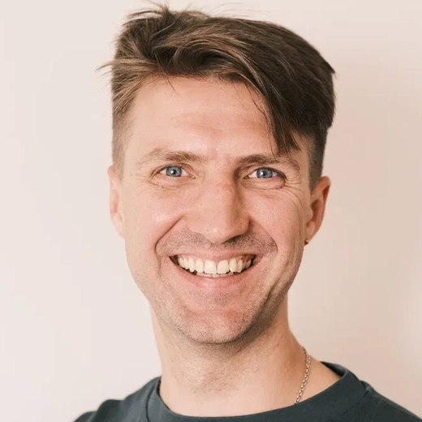

Igor Chemerkin is AI Mentor at OloloPro where he trains and consults different businesses on AI integration. Igor worked as a senior software developer for over 9 years and then gradually shifted to AI mentorship. He is the founder of the Bishkek AI community.
Speakers
Three practitioners, three vantage points
Aidin Biibosunov is a Computational Biology Researcher at Differentia Bio, where he works on mathematical modeling of the immune system. As a Teach for Kyrgyzstan fellow teaching math in a rural public school, he built AIsuluu — an AI assistant that grades handwritten math homework and gives each student personalized feedback.

Ivan Ninenko is Strategic Lead for Education Systems Innovation at Bishkek International School. He has driven a Teach for Kyrgyzstan initiative piloting AI-powered teaching assistants across rural Kyrgyz public schools, and co-founded QuantaQuiz, an AI-powered testing and personalized-feedback platform.
What you take away
A shared, current picture of the technology — before we discuss the skills.
- What AI can already automate Which slices of the working week are genuinely handed over.
- How AI agents work Plan, use a tool, check the result — and where the loop breaks.
- How fast things are changing The slope we are on — and what the next year plausibly holds.